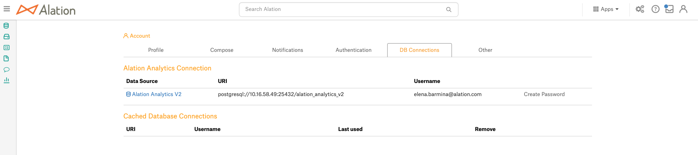

User Access to Alation Analytics V2¶
Alation Cloud Service Applies to Alation Cloud Service instances of Alation
Customer Managed Applies to customer-managed instances of Alation
Available from version 2020.3
Alation Analytics V2 is a Private Data Source. A Data Source Admin for Alation Analytics V2 can provide the Viewer, Querier, or Admin access to other users on the Access tab of the data source Settings page.
Note
The Alation Analytics V2 data source cannot be set to Public. The Public option for this data source on the Access tab of the settings is disabled.
Grant Access¶
For users to be able to view, query or manage the settings of the Alation Analytics V2 Data Source, they must be granted access.
As the Data Source Admin, find Alation Analytics V2 among the Data Sources. You can use search or the list on the Sources page to locate it.
Open the catalog page of Alation Analytics V2. Server Admins can first grant access to themselves, and then assign other users to be Viewers, Queriers or Admins.
To grant access to yourself as the Server Admin, in the upper-right corner of the Alation Analytics Data Source page, click More then click Settings. The Edit Your Permissions to Access Settings warning will pop up.
In this popup, click Go to Access. The Access tab of the Data Source settings page will open.
Find section People. In this section, click Add on the right, and in the Search Users list that opens, start typing your username. The list will update accordingly. Find and click your username to be added to the people with access list.
Important
All new users are first added with the access level Viewer, including Server Admins. You can change the access level in the Access Level column of the People table.
To grant access to other users,
Click Add in the People section and then find and click the user to be added. The selected user will be added to the People list.
To change the access level for a user, find them in the People table, and click the current Access value in the Access Level column to open the list of options.
In the Access Level list, click the access level you want to assign to the user:
Data Source Admin - can manage the Data Source settings, add other users as Data Source Admins, Viewers, or Queriers, and query the Data Source. Data Source Admins are given a database account to connect to Alation Analytics and can set up the password on their Account Settings page.
Querier - can both view the extracted metadata and query Alation Analytics in Compose. Queriers are given a database account, too, and can set up the password on their Account Settings page.
Viewer - can only view the extracted metadata of the Data Source. They are not given an account to query Alation Analytics.
Users who are granted the Querier or Data Source Admin access must create a password for their Alation Analytics account and connect to the source from Compose using this individual account.
Setting Up Database Account for Alation Analytics V2¶
Users granted the Querier or Data Source Admin access to Alation Analytics V2 must complete the setup of their database access account to be able to query this database using Compose or other BI tools. When a user is assigned either the Data Source Admin or the Querier access, they will receive an email notification from Alation with a link to their Account Settings page where they can provide the password for Alation Analytics.
Note
For email notifications to reach users, the Email Server in Alation should have been set up.
To set up the database account password,
Follow the link in the Data Source assignment email notification. Alternatively, in Alation, you can click the User icon in the upper right-hand corner of the main toolbar and in the list that opens, click Account Settings. The user’s Account Settings page will open.
Click the DB Connections tab.
Under Alation Analytics Connection, click Create Password on the right to create a new password or click Change Password if you are changing your existing password. Note that you need to have either a Data Source Admin or Querier access to see the Alation Analytics V2 connection:
In the Create Password dialog that appears, specify your new password and click Save. Your DB Account setup for Alation Analytics is now complete. You can test it by establishing a connection to Alation Analytics in Compose, Alation’s integrated querying tool.
Removing an Alation Analytics Account¶
This requires the access level of a Data Source Admin for the Alation Analytics V2 database.
To revoke access to Alation Analytics from a user,
In the Alation Catalog, find the Alation Analytics Data Source and open its settings.
On the Access tab, in the People list, find the user to revoke access from. To find the user, you can start typing their name in the Filter in the top right corner of the table. The list of users with access will update accordingly to display names that fit your search query.
For this user, click Remove. The corresponding database account will be removed, and the user will no longer be able to access Alation Analytics V2.